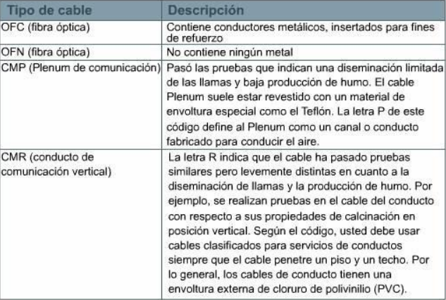
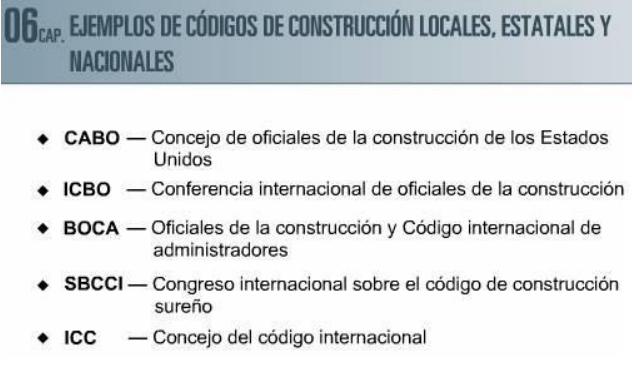
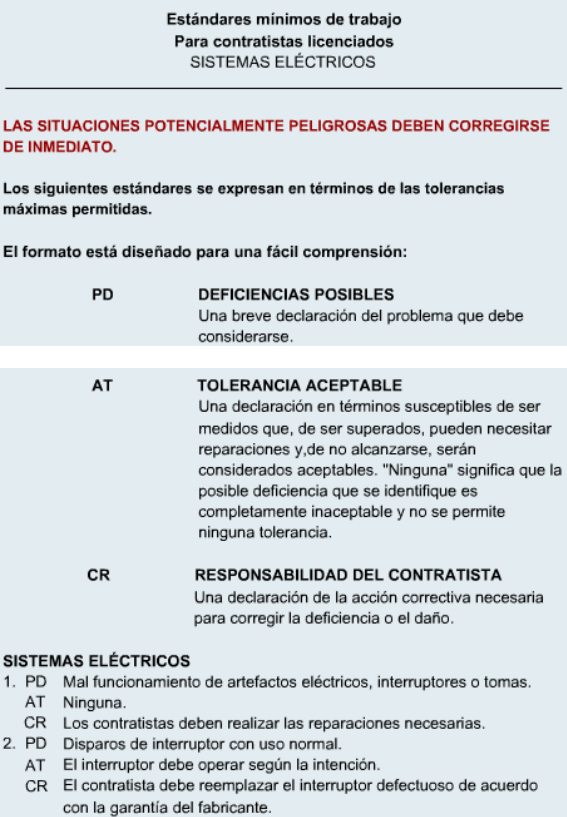
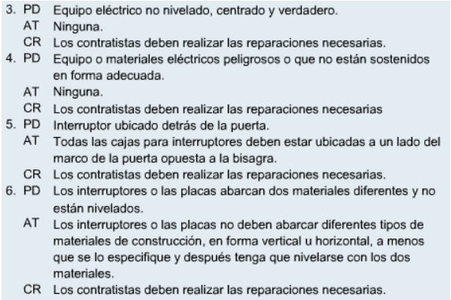

Durante las últimas décadas hubo un enorme crecimiento en la cantidad de redes que hay. Sin embargo, muchas redes que se construyeron utilizaban distintas implementaciones de hardware y software. Provocando una incompatibilidad y dificultad en la comunicación entre sí. Para solucionar esta problemática, la Organización Internacional de Normalización (ISO, International Organization for Standardization). Desarrolló en 1984 el modelo de referencia OSI, siendo un marco estándar el cual ayuda a los ingenieros a diseñar redes compatibles e interoperables. En este capítulo se va a explicar cuales son los códigos, como se desarrollan y la importancia de los estándares y códigos. La segunda sección se habla de organizaciones globales de estandarización como:
En este capítulo no hay una revisión general de los estándares mundiales. Simplemente nos provee de una descripción general de alguna de los estándares comunes y su intervención es demostrar la importancia de los estándares.
Los códigos de electricidad tienen como principal objetivo proteger a las personas de los peligros ocultos que pueden tener al estar expuestos por cableado o una instalación eléctrica no completada correctamente. Los códigos expresan adecuadamente qué acciones se deben realizar y aquellas que no deberían realizar, expresando que si se respetan los códigos la probabilidad de accidentes graves sería mucho más baja, siendo así un mundo más seguro. También cubre a los trabajadores de lesiones y facilita el trabajo de una remodelación, ya que si se trabaja de manera organizada, el reacondicionamiento es más fácil de estimar, planificar y ejecutar. Aunque los códigos sean fundamentales estos no abarcan todos los aspectos del trabajo, simplemente define los requisitos mínimos de la seguridad. Quedando así en responsabilidad del trabajador o contratista. Los códigos normalmente rigen las partes importantes de lo que se está haciendo. Explican en detalle lo que se debe hacer y lo que no se debe hacer para preservar la seguridad de las personas y de la propiedad.
Los códigos son elaborados por autoridades centrales o grupos de expertos y una vez que lo adopten (o no) las autoridades locales, adquiere fuerza la ley. Incumplirlos concluye en un delito sancionable. Todos los códigos son importantes, sea de gas, plomería o electricidad. El código más importante destacado es electricidad especialmente por el alto riesgo que representa la electricidad cuando no se maneja de forma adecuada.
El propósito de los códigos de electricidad es proteger a las personas y a su propiedad de los peligros emergentes del uso de la electricidad. Los códigos de electricidad intentan explicar la protección contra choque eléctrico, contra fallas de corriente, entre otras cosas.
Es importante que los instaladores comprendan y sigan los códigos eléctricos, porque el cableado de comunicaciones insuficiente puede deshacer algunos aspectos del cableado. Por ejemplo, si se debe quitar un cable de comunicaciones que cruza un cable eléctrico, podría cortarlo mediante fricción, haciendo que pierda utilidad. Por otro lado, si el instalador puede reconocer e informar una condición de electricidad insegura, podría salvar una vida.
Los estándares son conjuntos de normas, y que sirven como medida de excelencia. Los estándares pueden tomar varias formas. Pueden estar especificados por un solo proveedor, o pueden ser estándares de la industria que soportan la interoperabilidad de varios proveedores. Debido a que el rendimiento de una red está relacionado con las buenas conexiones, este módulo se centra en los estándares de medios de networking y en las prácticas de cableado estructurado. Numerosas compañías regulan y especifican los cables en uso.
Hace más de una década, compañías como AT&T, IBM y Northern Telecom desarrollaron volúmenes de especificaciones detalladas. Estas fueron más allá del cableado e incluyeron conectores, cables, y técnicas de instalación. Los planes de cables integrados desarrollados por compañías específicas se denominan Sistema de Cable Estructurado (SCS).
Por lo general, la arquitectura SCS ofrece lo siguiente:
Sin embargo, los sistemas y las arquitecturas de las grandes compañías son sólo una parte. Existen muchas otras influencias, como organizaciones nacionales e internacionales, que desarrollan códigos de incendio y de construcción. Una red que crece sin plan de sistema de cable estructurado es muy costosa para mantener.
Los estándares son especificaciones técnicas que garantizan que productos y servicios funcionen correctamente y, en el ámbito de las redes y la informática, pueden ser propios de un fabricante o compartidos por la industria para asegurar la interoperabilidad.
Estos estándares se apoyan en mejores prácticas, es decir, métodos basados en la experiencia y la investigación que orientan tareas como la instalación, seguridad, conexión y prueba de cableados. Su aplicación es fundamental, ya que el incumplimiento de estas prácticas puede afectar gravemente el rendimiento esperado.
Además, las mejores prácticas suelen servir de base para la creación de estándares, que pueden evolucionar desde acuerdos de la industria hasta convertirse en estándares nacionales e internacionales cuando son adoptados por suficientes organizaciones y países.
Inicialmente, los estándares informáticos estaban controlados por los fabricantes, quienes utilizaban tecnologías propietarias que dificultaban la interoperabilidad entre equipos de distintos proveedores.
Con el crecimiento de las redes en la década de 1980, surgió la necesidad de unificar criterios, lo que llevó a la creación del modelo OSI por parte de la Organización Internacional de Estandarización, un marco de siete capas diseñado para garantizar la compatibilidad entre tecnologías de red.
Desde entonces, diversas organizaciones y gobiernos han desarrollado estándares para regular aspectos como el cableado, la seguridad, las pruebas, los códigos de construcción y el rendimiento de las redes. Estos estándares son esenciales para asegurar el funcionamiento óptimo, la interoperabilidad y la seguridad de los sistemas, y se actualizan constantemente para adaptarse a nuevas tecnologías, reemplazando gradualmente aquellas que quedan obsoletas.
Muchos de los estándares actuales de redes de datos surgieron a partir de las especificaciones desarrolladas por fabricantes de computadoras como IBM y AT&T, cuyas innovaciones en cableado y conectividad influyeron significativamente en la industria. Sin embargo, estos sistemas propietarios solían limitar la compatibilidad con productos de otros proveedores y dificultaban la actualización o modificación de las infraestructuras.
Para superar estas limitaciones, durante la década de 1980 comenzaron a desarrollarse estándares industriales respaldados por múltiples fabricantes, promoviendo una mayor interoperabilidad. Además, empresas como Anixter contribuyeron al establecimiento de estándares abiertos y documentados para el cableado de par trenzado, favoreciendo soluciones más flexibles y ampliamente compatibles.
Los estándares suelen ser desarrollados por organizaciones internacionales como la IEEE, la ISO y la IEC con el objetivo de establecer normas universales que faciliten la compatibilidad y calidad de los sistemas.
Estos estándares pueden ser adoptados por los países y, en algunos casos, incorporados a códigos nacionales, eléctricos, de construcción o de incendios, convirtiéndose en requisitos legales cuyo incumplimiento puede generar sanciones. Sin embargo, la adopción de estándares internacionales varía según las políticas y necesidades locales, y generalmente los códigos locales tienen prioridad sobre los nacionales e internacionales. En el ámbito del cableado de redes, el desconocimiento o incumplimiento de estos estándares y códigos puede reducir significativamente el rendimiento, la seguridad y la vida útil de las instalaciones.
Establecida en 1947, la Organización Internacional de Normalización (ISO) es una organización no gubernamental integrada por organismos nacionales de estandarización de más de 140 países (como el ANSI de Estados Unidos). Su principal función es promover el desarrollo de estándares internacionales y lograr acuerdos que se publiquen como normas reconocidas mundialmente. Entre sus estándares más importantes en el ámbito informático se encuentra el modelo de referencia OSI, una arquitectura estandarizada para el diseño de redes.
ISO mantiene una alianza estratégica junto al Comité Internacional Electrotécnico (IEC) y la Unión Internacional de Telecomunicaciones (ITU) con la Organización Mundial del Comercio (WTO). Por su parte, el Comité Internacional Electrotécnico (IEC) fue fundado en 1906 tras una resolución del Congreso Internacional de Electricidad realizado en St. Louis (EE.UU.) en 1904. Es la organización global responsable de preparar y publicar estándares internacionales para todas las tecnologías relacionadas con la electricidad, la electrónica y disciplinas afines. Cuenta con más de 60 países miembros, incluyendo las principales naciones comerciales e industrializadas.
La misión del IEC es fomentar la cooperación internacional en áreas como electrónica, magnetismo, electromagnetismo, telecomunicaciones, producción y distribución de energía, compatibilidad electromagnética, seguridad y medio ambiente, entre otras. Además, es una de las organizaciones reconocidas por la Organización Mundial del Comercio (WTO), cuyos estándares internacionales sirven de base para la elaboración de normas nacionales y regionales, ayudando a eliminar barreras técnicas al comercio.
Algunos estándares cumplen también la función de promover los intereses de determinados países. Un claro ejemplo es el Instituto Nacional Americano de Estandarización (ANSI), una organización privada sin ánimo de lucro que administra y coordina el sistema voluntario de estandarización y evaluación de conformidad de los Estados Unidos.
El ANSI identifica necesidades industriales y públicas, coordina el desarrollo de estándares de consenso nacional, resuelve conflictos relacionados con ellos y asegura una participación efectiva de Estados Unidos en la estandarización internacional. Desde 1918, su misión ha sido mejorar la competitividad global del país y la calidad de vida de sus ciudadanos mediante el fomento de estándares voluntarios y sistemas de evaluación de conformidad, protegiendo siempre su integridad.
Es importante destacar que el ANSI no elabora estándares directamente, sino que facilita su desarrollo a través de procesos de consenso entre grupos calificados. Esto explica por qué su sigla aparece en numerosos estándares. Muchas agencias del gobierno estadounidense los han adoptado como obligatorios. El ANSI actúa además como representante oficial de Estados Unidos ante organismos internacionales clave como el Foro Internacional de Acreditación (IAF), la Organización Internacional de Normalización (ISO) y el Comité Internacional Electrotécnico (IEC).
Gracias a esto, los estándares ANSI/TIA/EIA mantienen una estrecha relación con los estándares internacionales de cableado (como la ISO 11801). Tanto la Asociación de la Industria de las Telecomunicaciones (TIA) como la Asociación de Industrias Electrónicas (EIA) están acreditadas por el ANSI para desarrollar estándares voluntarios en telecomunicaciones. Sus comités se encargan de crear normas para fibra óptica, equipos terminales, equipos de red, comunicaciones inalámbricas y satelitales, entre otros.
Existen organizaciones similares en otras partes del mundo. En Europa, por ejemplo, varios países se han agrupado en entidades como CENELEC, que cumple un rol equivalente en la estandarización regional.
El IEEE es una asociación profesional técnica sin ánimo de lucro que tiene más de 377.000 miembros en 150 países. Fundada en 1884, la organización incluye ingenieros, científicos y estudiantes. A través de sus miembros, el IEEE es una autoridad líder en áreas técnicas que van desde la ingeniería informática, la tecnología biomédica y las telecomunicaciones hasta la energía eléctrica, el aeroespacio y la electrónica del consumidor. El IEEE tiene más de 860 estándares que se ejecutan actualmente y 700 que están en desarrollo. El IEEE es reconocido por desarrollar estándares para la industria informática y electrónica. En particular, se siguen en gran medida los estándares IEEE 802 para redes de área local.
En febrero de 1980, el IEEE estableció el comité 802 con el fin de desarrollar estándares de networking, particularmente para cableado y transmisión de datos. El nombre “802” corresponde al año (1980) y al mes (febrero) de su creación.
Este comité generó los estándares 802, asignando números decimales para identificar tecnologías específicas, tales como el 802.3 (Ethernet) y el 802.5 (Token Ring). Cuando las tecnologías evolucionan (por ejemplo, de Ethernet a Fast Ethernet o Gigabit Ethernet), no es necesario crear un estándar completamente nuevo. En su lugar, se agregan letras después del número decimal para indicar las mejoras. Ejemplos de esto son el 802.3u (Fast Ethernet a 100 Mbps) y el 802.3ab (Gigabit Ethernet 1000Base-T sobre cableado de par trenzado Categoría 5e). En el caso de las redes inalámbricas, destacan los estándares 802.11, como el 802.11b (2,4 GHz / 11 Mbps), 802.11a (5 GHz / 54 Mbps), 802.11g (2,4 GHz / 54 Mbps) y 802.11i (relacionado con seguridad).
A continuación, los principales estándares 802 desarrollados por el comité para redes de área local (LAN) y redes de área metropolitana (MAN):
Otros estándares del comité abordan temas como fibra óptica, cableado de banda ancha, servicios integrados de voz y datos, y seguridad en redes.
El IEEE 802.3 define las especificaciones de networking basadas en Ethernet. Este estándar describe cómo viajan las series de bits digitales a través del cable y utiliza un método de acceso al medio llamado CSMA/CD (Acceso Múltiple con Detección de Portadora y Detección de Colisiones).
En la práctica, cada estación que desea transmitir primero escucha el cable para verificar si está libre. Si lo está, comienza a transmitir y, al mismo tiempo, sigue escuchando para detectar posibles colisiones. Si detecta otra señal mientras transmite, detiene inmediatamente la transmisión, envía una señal de atascamiento (jam signal) y espera un tiempo aleatorio antes de volver a intentarlo. Este método es no determinista, es decir, no se puede predecir qué estación transmitirá en cada momento, aunque todas tienen oportunidad de hacerlo eventualmente.
La principal ventaja del CSMA/CD es que funciona de forma automática sin necesidad de administración central. Sin embargo, tiene desventajas importantes: existe riesgo constante de colisiones, lo que genera retransmisiones. Estas colisiones y retransmisiones aumentan la congestión de la red y reducen su rendimiento. Se estima que si solo el 1% de los paquetes se dañan, el rendimiento de la red puede caer hasta un 75%. Por esta razón, es fundamental que el cableado esté en excelentes condiciones técnicas.
El estándar IEEE 802.3 es la base de docenas de variantes de Ethernet (thicknet, thinnet, UTP y fibra óptica). A continuación, los principales estándares de cableado definidos para LAN que operan a 10 o 100 Mbps (denominados 10Base o 100Base):
En 1999, Apple Computer introdujo los primeros productos comerciales basados en el estándar IEEE 802.11. A partir de entonces, muchas empresas, incluyendo Cisco, comenzaron a fabricar productos Wi-Fi para entornos comerciales y domésticos. Actualmente, los dispositivos bajo el nombre de Wi-Fi (Fidelidad Inalámbrica) gozan de gran popularidad y continuo crecimiento.
El estándar 802.11b funciona como una extensión inalámbrica de Ethernet, principalmente para tráfico TCP/IP, aunque también soporta otros protocolos como AppleTalk. Gracias a su similitud con Ethernet, permite una comunicación sencilla entre PCs, Macs y otros dispositivos mediante tarjetas inalámbricas internas o externas.
Este estándar permite transmisiones a distancias de varios cientos de pies en interiores y miles de pies en exteriores, en bandas sin licencia de microondas, con velocidades de hasta 11 Mbps. La distancia real depende de los obstáculos y materiales presentes.
Posteriormente surgieron versiones más rápidas como:
Además, se han desarrollado nuevos protocolos de seguridad, entre los que destaca el 802.11i.
La Alianza de Compatibilidad con Ethernet Inalámbrico (WECA), certifica los equipos que cumplen el estándar, otorgándoles el sello “Compatible con Wi-Fi”. Esto permite la interoperabilidad entre diferentes marcas: un usuario puede combinar puntos de acceso y dispositivos cliente de distintos fabricantes siempre que cumplan con el estándar Wi-Fi.
La Asociación de Industrias Electrónicas (EIA) y la Asociación de la Industria de las Telecomunicaciones (TIA) son asociaciones comerciales que desarrollan y publican conjuntamente estándares para cableado estructurado de voz y datos en redes LAN. Estos estándares surgieron tras la desregulación de la industria telefónica en Estados Unidos en 1984, que transfirió la responsabilidad del cableado interno al propietario de los edificios.
Los estándares más utilizados por los instaladores son los siguientes:
Además, existen otros estándares importantes como:
Existen muchas otras organizaciones que desarrollan estándares internacionales que posteriormente son adoptados a nivel mundial. Entre las más importantes se encuentran:
ECA (Asociación de Componentes, Ensambles y Materiales Electrónicos): Representa a fabricantes y proveedores de componentes electrónicos pasivos y activos, ensambles y equipos industriales. Proporciona a sus miembros información técnica y comercial, investigación de mercado, análisis de tendencias, acceso a líderes de la industria y capacitación especializada.
CEA (Asociación de Electrónica para el Consumidor): Agrupa a más de 650 empresas de tecnología de consumo en Estados Unidos. Ofrece investigación de mercado, oportunidades de networking, programas educativos, capacitación técnica y representa los intereses de la industria ante diversos sectores.
GEIA (Asociación Gubernamental de Tecnología Electrónica y de la Información): Forma parte de la EIA y representa a las industrias de alta tecnología que proveen soluciones de electrónica y tecnologías de la información al gobierno de Estados Unidos. Realiza estudios de mercado y pronósticos sobre cableado, tecnologías instrumentales y productos electrónicos para entidades de defensa y civiles.
JEDEC (Asociación de Tecnología en Estado Sólido): Es el organismo de estandarización de semiconductores de la EIA. Creado en 1960, inicialmente se enfocaba en dispositivos semiconductores discretos y en 1970 se amplió para incluir circuitos integrados.
NEMA (Asociación Nacional de Fabricantes de Electricidad): Fundada en 1926, proporciona un foro para la estandarización de equipos eléctricos, promoviendo productos seguros, eficientes y compatibles. Además, influye en políticas públicas y actúa como centro de recopilación y análisis de datos estadísticos y económicos del sector eléctrico.
Debido a los altos riesgos que representa, la electricidad es uno de los temas que más preocupa a las agencias gubernamentales encargadas de los códigos y las medidas de seguridad. Un cableado inadecuado puede provocar incendios y representar una amenaza grave para la vida humana. De hecho, la electrocución sigue siendo una de las principales causas de muerte accidental en el mundo.
Aunque la sociedad acepta estos riesgos por la gran conveniencia que ofrece la electricidad (hasta el punto de que la vida moderna no podría funcionar sin ella), las normas eléctricas se centran principalmente en garantizar que los electricistas estén debidamente capacitados y utilicen técnicas seguras. Por lo general, se exige un proceso de inspección para certificar que el trabajo cumple con los estándares antes de ocupar o utilizar una estructura. En muchos lugares, violar estos códigos y estándares constituye un delito.
Los instaladores de cables de telecomunicaciones son quienes más se acercan al cableado y accesorios eléctricos durante su trabajo. Por esta razón, es fundamental que tengan al menos un conocimiento básico de los códigos y estándares eléctricos vigentes en la zona geográfica donde operan.
Los códigos de electricidad integrales regulan diversos aspectos relacionados con las telecomunicaciones. La mayoría de los países redactan estos códigos en un lenguaje legal formal para facilitar su adopción por parte de los gobiernos estatales y locales.
Entre los principales temas que abordan se encuentran:
Estos ítems corresponden al Código Eléctrico Nacional (NEC) de Estados Unidos.

Algunos proyectos de networking requieren obtener un permiso previo para garantizar que el trabajo se realiza correctamente. Se recomienda contactar al departamento de catastro o al funcionario responsable de construcciones de la jurisdicción local para conocer los requisitos de permisos y obtener copias de los códigos de construcción estatales o locales.
La mayoría de los códigos de construcción básicos utilizados en Estados Unidos (CABO, ICBO, BOCA, SBCCI, ICC, entre otros) pueden adquirirse a través de la Conferencia Internacional de Funcionarios de la Construcción (ICBO). Las principales organizaciones relacionadas con códigos, permisos y licencias de construcción son:
Otras organizaciones y recursos importantes incluyen:

Es común que los códigos que requieren inspección y cumplimiento local se incorporen primero en los reglamentos de los gobiernos estatales o provinciales, para luego transferir su aplicación a nivel municipal o de ciudad. Ejemplos claros son los códigos de construcción, códigos de incendio y códigos eléctricos. En sus orígenes, al igual que la seguridad laboral, estos eran asuntos puramente locales. Sin embargo, la gran disparidad de estándares y el frecuente incumplimiento llevaron a la creación de normas nacionales. Una vez que las autoridades estatales o locales adoptan estos estándares, se transmiten a los niveles inferiores para su ejecución.
Este proceso no logra una uniformidad total. Existen muchas dinámicas que influyen en la adopción e implementación local de los códigos. Las aseguradoras suelen establecer clasificaciones según el grado de aplicación de los mismos, y muchos estados limitan la responsabilidad de los empleadores para incentivar el cumplimiento. Aun así, el resultado suele ser una aplicación inconsistente de los códigos y requisitos. Por esta razón, es esencial verificar los requerimientos específicos del sitio de trabajo en particular. El cumplimiento de algunos códigos puede variar según la ciudad o provincia. Por ejemplo, en algunas comunidades la ejecución de los códigos contra incendios corresponde al departamento de autorizaciones de construcciones, mientras que en otras recae sobre el departamento de bomberos.
Por último, hay que tener en cuenta que el precio de incumplir estos códigos suele ser muy alto, tanto por las sanciones como por los retrasos y costos adicionales en los proyectos.
Como se mencionó anteriormente, la implementación de códigos como los de construcción y contra incendios suele ser responsabilidad de los gobiernos municipales o del condado. Esto implica que un proyecto dentro de los límites de una ciudad estará supervisado por las agencias correspondientes de esa ciudad, mientras que los proyectos ubicados fuera de la ciudad generalmente serán controlados por agencias estatales o provinciales. Además, el cumplimiento de estos códigos se integra al proceso de obtención de permisos, el cual normalmente incluye el pago de tarifas y plazos para audiencias públicas o períodos de comentarios. Por esta razón, es fundamental investigar cuáles son los requisitos específicos del lugar y cumplirlos estrictamente. Es importante recordar la jerarquía de los códigos: los códigos locales siempre tienen prioridad sobre los códigos estatales, y estos a su vez prevalecen sobre los códigos nacionales.

